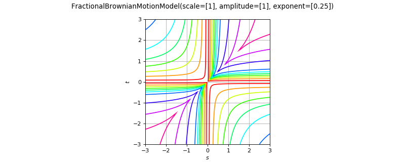
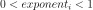
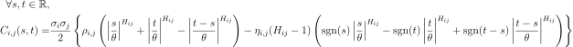
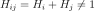
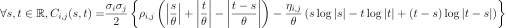
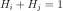
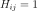
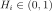

FractionalBrownianMotionModel¶
(Source code, png, hires.png, pdf)
{kind=link}
{kind=link}

-
class
FractionalBrownianMotionModel(*args)¶ Multivariate fractional Brownian motion covariance function.
- Available constructors:
FractionalBrownianMotionModel()
FractionalBrownianMotionModel(scale, amplitude, exponent)
FractionalBrownianMotionModel(scale, amplitude, exponent, eta, rho)
- Parameters
- scalepositive float
Correlation scale between two locations.
- amplitudesequence of positive floats
Standard deviations of the model
 .
.- exponentsequence of float,

Hurst exponents of the model, ie homogeneity degrees of the self-similarity property.
- eta
SquareMatrix Disymmetry matrix. This matrix expresses the antisymmetric part of the dependence between the components of the model. It is antisymmetric, only its strictly lower part is addressed.
- rho
CorrelationMatrix Correlation matrix. This matrix expresses the symmetric part of the dependence between the components of the model.
See also
Notes
The multivariate fractional Brownian motion model is a nonstationary covariance function of input dimension 1 defined by:

for

and:
for

, where is the Hurst exponent of the
is the Hurst exponent of the
 -th component and
-th component and  its amplitude. Not that the scale
coefficient simplifies in the antisymmetric part when
its amplitude. Not that the scale
coefficient simplifies in the antisymmetric part when 
. The compatibility conditions between the vector of exponents, the correlation matrix and the disymmetry matrix are quite evolved, see [amblard2012].Examples
Create a standard fractional Brownian motion covariance, corresponding to the univariate standard Brownian motion:
>>> import openturns as ot >>> covModel = ot.FractionalBrownianMotionModel() >>> s = 0.1 >>> t = 0.2 >>> print(covModel(s, t)) [[ 0.223607 ]]
Create an univariate fractional Brownian motion covariance:
>>> covModel2 = ot.FractionalBrownianMotionModel(0.5, 1.5, 0.25)
Create a multivariate fractional Brownian motion covariance:
>>> covModel3 = ot.FractionalBrownianMotionModel(0.5, [1.5, 1.0], [0.25, 0.6], ot.SquareMatrix([[0.0, 0.2], [-0.2, 0.0]]), ot.CorrelationMatrix([[1.0, 0.5], [0.5, 1.0]]))
Methods
__call__(self, \*args)Evaluate the covariance function.
computeAsScalar(self, s, t)Compute the covariance function for scalar model.
computeStandardRepresentative(self, s, t)Compute the standard representative function of the covariance model.
discretize(self, \*args)Discretize the covariance function on a given mesh.
discretizeAndFactorize(self, \*args)Discretize and factorize the covariance function on a given mesh.
discretizeAndFactorizeHMatrix(self, \*args)Discretize and factorize the covariance function on a given mesh.
discretizeHMatrix(self, \*args)Discretize the covariance function on a given mesh using HMatrix result.
discretizeRow(self, vertices, p)(TODO)
draw(self, \*args)Draw a specific component of the covariance model with input dimension 1.
getActiveParameter(self)Accessor to the active parameter set.
getAmplitude(self)Get the amplitude parameter
 of the covariance function.
of the covariance function.getClassName(self)Accessor to the object’s name.
getEta(self)Eta accessor.
getExponent(self)Exponent accessor.
getFullParameter(self)Get the full parameters of the covariance function.
Get the description full parameters of the covariance function.
getId(self)Accessor to the object’s id.
getInputDimension(self)Get the input dimension
 of the covariance function.
of the covariance function.getMarginal(self, \*args)Get the ith marginal of the model.
getName(self)Accessor to the object’s name.
getNuggetFactor(self)Accessor to the nugget factor.
getOutputCorrelation(self)Get the spatial correlation matrix
 of the covariance function.
of the covariance function.getOutputDimension(self)Get the dimension
 of the covariance function.
of the covariance function.getParameter(self)Get the parameters of the covariance function.
getParameterDescription(self)Get the description of the covariance function parameters.
getRho(self)Rho accessor.
getScale(self)Get the scale parameter
 of the covariance function.
of the covariance function.getShadowedId(self)Accessor to the object’s shadowed id.
getVisibility(self)Accessor to the object’s visibility state.
hasName(self)Test if the object is named.
hasVisibleName(self)Test if the object has a distinguishable name.
isDiagonal(self)Test whether the model is diagonal or not.
isStationary(self)Test whether the model is stationary or not.
parameterGradient(self, s, t)Compute the gradient according to the parameters.
partialGradient(self, s, t)Compute the gradient of the covariance function.
setActiveParameter(self, active)Accessor to the active parameter set.
setAmplitude(self, amplitude)Set the amplitude parameter
of the covariance function.setExponentEtaRho(self, exponent, eta, rho)Multivariate parameters accessor.
setFullParameter(self, parameter)Set the full parameters of the covariance function.
setName(self, name)Accessor to the object’s name.
setNuggetFactor(self, nuggetFactor)Set the nugget factor for the regularization.
setOutputCorrelation(self, correlation)Set the spatial correlation matrix
of the covariance function.setParameter(self, parameter)Set the parameters of the covariance function.
setScale(self, scale)Set the scale parameter
of the covariance function.setShadowedId(self, id)Accessor to the object’s shadowed id.
setVisibility(self, visible)Accessor to the object’s visibility state.
-
__init__(self, *args)¶ Initialize self. See help(type(self)) for accurate signature.
-
computeAsScalar(self, s, t)¶ Compute the covariance function for scalar model.
- Available usages:
computeAsScalar(s, t)
computeAsScalar(tau)
- Parameters
- s, tsequences of float
Multivariate index

- tausequence of float
Multivariate index

- Returns
- covariancefloat
Covariance.
Notes
The method makes sense only if the dimension of the process is
 .
It evaluates
.
It evaluates  .
.In the second usage, the covariance model must be stationary. Then we note
 for
for  as
this quantity does not depend on
as
this quantity does not depend on  .
.
-
computeStandardRepresentative(self, s, t)¶ Compute the standard representative function of the covariance model.
- Available usages:
computeStandardRepresentative(s, t)
computeStandardRepresentative(tau)
- Parameters
- s, tsequences of float
Multivariate index
- taufloat or sequence of float
Multivariate index
- Returns
- rhofloat
Correlation model

Notes
It evaluates the scalar function
 or
or
 if the model is stationary.
if the model is stationary.
-
discretize(self, *args)¶ Discretize the covariance function on a given mesh.
- Parameters
- meshOrGrid
MeshorRegularGrid Mesh or time grid of size
 associated with the process.
associated with the process.
- meshOrGrid
- Returns
- covarianceMatrix
CovarianceMatrix Covariance matrix
 (if the process is of
dimension
(if the process is of
dimension
- covarianceMatrix
Notes
This method makes a discretization of the model on meshOrGrid composed of the vertices
 and returns the
covariance matrix:
and returns the
covariance matrix:
-
discretizeAndFactorize(self, *args)¶ Discretize and factorize the covariance function on a given mesh.
- Parameters
- meshOrGrid
MeshorRegularGrid Mesh or time grid of size
associated with the process.
- meshOrGrid
- Returns
- CholeskyMatrix
TriangularMatrix Cholesky factor of the covariance matrix
 (if the process is of dimension ).
(if the process is of dimension ).
- CholeskyMatrix
Notes
This method makes a discretization of the model on meshOrGrid composed of the vertices
thanks to the
discretize method and returns its Cholesky factor.
-
discretizeAndFactorizeHMatrix(self, *args)¶ Discretize and factorize the covariance function on a given mesh.
This uses HMatrix.
- Parameters
- meshOrGrid
MeshorRegularGrid Mesh or time grid of size
associated with the process.- nuggetFactor: float
Nugget factor to be added to the discretized matrix
- hmatParam
HMatrixParameters Parameter values for the HMatrix
- meshOrGrid
- Returns
- HMatrix
HMatrix Cholesk matrix
(if the process is of
dimension ), stored in hierarchical format (H-Matrix)
- HMatrix
Notes
This method si similar to the discretizeAndFactorize method. This method requires that OpenTURNS has been compiled with the hmat library. The method is helpfull for very large parameters (Mesh, grid, Sample) as its compress data.
-
discretizeHMatrix(self, *args)¶ Discretize the covariance function on a given mesh using HMatrix result.
- Parameters
- meshOrGrid
MeshorRegularGrid Mesh or time grid of size
associated with the process.- nuggetFactor: float
Nugget factor to be added to the discretized matrix
- hmatParam
HMatrixParameters Parameter values for the HMatrix
- meshOrGrid
- Returns
- HMatrix
HMatrix Covariance matrix
 (if the process is of
dimension ), stored in hierarchical format (H-Matrix)
(if the process is of
dimension ), stored in hierarchical format (H-Matrix)
- HMatrix
Notes
This method si similar to the discretize method. This method requires that OpenTURNS has been compiled with the hmat library. The method is helpfull for very large parameters (Mesh, grid, Sample) as its compress data.
-
discretizeRow(self, vertices, p)¶ (TODO)
-
draw(self, *args)¶ Draw a specific component of the covariance model with input dimension 1.
- Parameters
- rowIndexint,

The row index of the component to draw. Default value is 0.
- columnIndex: int, :math:`0 leq columnIndex < dimension`
The column index of the component to draw. Default value is 0.
- tMinfloat
The lower bound of the range over which the model is plotted. Default value is CovarianceModel-DefaultTMin in
ResourceMap.- tMaxfloat
The upper bound of the range over which the model is plotted. Default value is CovarianceModel-DefaultTMax in
ResourceMap.- pointNumberint,

The discretization of the range
![[tMin,tMax]](../../_images/math/cf794a6a0bf61c06154d10f2019b37770c5a0d84.svg) over which the model is plotted. Default value is CovarianceModel-DefaultPointNumber in class:~openturns.ResourceMap.
over which the model is plotted. Default value is CovarianceModel-DefaultPointNumber in class:~openturns.ResourceMap.- asStationarybool
Flag to tell if the model has to be plotted as a stationary model, ie as a function of the lag
 if equals to True, or as a non-stationary model, ie as a function of
if equals to True, or as a non-stationary model, ie as a function of  if equals to False. Default value is True.
if equals to False. Default value is True.- correlationFlagbool
Flag to tell if the model has to be plotted as a correlation function if equals to True or as a covariance function if equals to False. Default value is False.
- rowIndexint,
- Returns
- graph
Graph A graph containing a unique curve if asStationary=True and if the model is actually a stationary model, or containing the iso-values of the model if asStationary=False or if the model is nonstationary.
- graph
-
getActiveParameter(self)¶ Accessor to the active parameter set.
- Returns
- active
Indices Indices of the active parameters.
- active
-
getAmplitude(self)¶ Get the amplitude parameter
of the covariance function.- Returns
- amplitude
Point The amplitude parameter
 of the covariance
function.
of the covariance
function.
- amplitude
-
getClassName(self)¶ Accessor to the object’s name.
- Returns
- class_namestr
The object class name (object.__class__.__name__).
-
getEta(self)¶ Eta accessor.
- Returns
- eta2-d sequence of floats
Disymmetry matrix. This matrix express the antisymmetric part of the dependence between the components of the model. It is antisymmetric, only its strictly lower part is addressed.
-
getExponent(self)¶ Exponent accessor.
- Returns
- exponentseqence of float,

Define the Hurst exponents of the components.
- exponentseqence of float,
-
getFullParameter(self)¶ Get the full parameters of the covariance function.
- Returns
- parameter
Point List the full parameter of the covariance function i.e. scale parameter
 , the
the amplitude parameter ,
the Spatial correlation parameter
, the
the amplitude parameter ,
the Spatial correlation parameter ![\mat{R} \in \cS_d^+([-1,1])](../../_images/math/7b9068385e065a331b4353449cdfaa00e9cb3ee1.svg) ;
and potential other parameter depending on the model;
;
and potential other parameter depending on the model;
- parameter
-
getFullParameterDescription(self)¶ Get the description full parameters of the covariance function.
- Returns
- description
Description Description of the full parameter of the covariance function.
- description
-
getId(self)¶ Accessor to the object’s id.
- Returns
- idint
Internal unique identifier.
-
getInputDimension(self)¶ Get the input dimension
of the covariance function.- Returns
- inputDimensionint
Spatial dimension
of the covariance function.
-
getMarginal(self, *args)¶ Get the ith marginal of the model.
- Returns
- marginalint or sequence of int
index of marginal of the model.
-
getName(self)¶ Accessor to the object’s name.
- Returns
- namestr
The name of the object.
-
getNuggetFactor(self)¶ Accessor to the nugget factor.
This parameter allows smooth predictions from noisy data. The nugget is added to the diagonal of the assumed training covariance (thanks to discretize) and acts as a Tikhonov regularization in the problem.
- Returns
- nuggetFactorfloat
Nugget factor used for the regularization of the discretized covariance matrix.
-
getOutputCorrelation(self)¶ Get the spatial correlation matrix
of the covariance function.- Returns
- spatialCorrelation
CorrelationMatrix Correlation matrix
 .
.
- spatialCorrelation
-
getOutputDimension(self)¶ Get the dimension
of the covariance function.- Returns
- dint
Dimension
such that  This is the dimension of the process
This is the dimension of the process  .
.
-
getParameter(self)¶ Get the parameters of the covariance function.
- Returns
- parameters
Point List of the scale parameter
and the
amplitude parameter of the covariance
function.The other specific parameters are not included.
- parameters
-
getParameterDescription(self)¶ Get the description of the covariance function parameters.
- Returns
- descriptionParam
Description Description of the components of the parameters obtained with the getParameter method..
- descriptionParam
-
getRho(self)¶ Rho accessor.
- Returns
- rho2-d sequence of floats
Correlation matrix. This matrix express the symmetric part of the dependence between the components of the model.
-
getScale(self)¶ Get the scale parameter
of the covariance function.- Returns
- scale
Point The scale parameter
used in the
covariance function.
- scale
-
getShadowedId(self)¶ Accessor to the object’s shadowed id.
- Returns
- idint
Internal unique identifier.
-
getVisibility(self)¶ Accessor to the object’s visibility state.
- Returns
- visiblebool
Visibility flag.
-
hasName(self)¶ Test if the object is named.
- Returns
- hasNamebool
True if the name is not empty.
-
hasVisibleName(self)¶ Test if the object has a distinguishable name.
- Returns
- hasVisibleNamebool
True if the name is not empty and not the default one.
-
isDiagonal(self)¶ Test whether the model is diagonal or not.
- Returns
- isDiagonalbool
True if the model is diagonal.
-
isStationary(self)¶ Test whether the model is stationary or not.
- Returns
- isStationarybool
True if the model is stationary.
Notes
The covariance function
 is stationary when it is invariant by
translation:
is stationary when it is invariant by
translation:
We note
for .
-
parameterGradient(self, s, t)¶ Compute the gradient according to the parameters.
- Parameters
- s, tsequences of float
Multivariate index
.
- Returns
- gradient
Matrix Gradient of the function according to the parameters.
- gradient
-
partialGradient(self, s, t)¶ Compute the gradient of the covariance function.
- Parameters
- s, tfloats or sequences of float
Multivariate index
.
- Returns
- gradient
Matrix Gradient of the covariance function.
- gradient
-
setActiveParameter(self, active)¶ Accessor to the active parameter set.
- Parameters
- activesequence of int
Indices of the active parameters.
-
setAmplitude(self, amplitude)¶ Set the amplitude parameter
of the covariance function.- Parameters
- amplitude
Point The amplitude parameter
to be used in the
covariance function.
Its size must be equal to the dimension of the covariance function.
- amplitude
-
setExponentEtaRho(self, exponent, eta, rho)¶ Multivariate parameters accessor.
- Parameters
- exponentsequence of float,
Define the Hurst exponents of the components.
- eta2-d sequence of floats
Disymmetry matrix. This matrix express the antisymmetric part of the dependence between the components of the model. It is antisymmetric, only its strictly lower part is addressed.
- rho2-d sequence of floats
Correlation matrix. This matrix express the symmetric part of the dependence between the components of the model.
-
setFullParameter(self, parameter)¶ Set the full parameters of the covariance function.
- Parameters
- parameter
Point List the full parameter of the covariance function i.e. scale parameter
, the
the amplitude parameter ,
the Spatial correlation parameter ;
and potential other parameter depending on the model;Must be at least of dimension
 .
.
- parameter
-
setName(self, name)¶ Accessor to the object’s name.
- Parameters
- namestr
The name of the object.
-
setNuggetFactor(self, nuggetFactor)¶ Set the nugget factor for the regularization.
Acts on the discretized covariance matrix.
- Parameters
- nuggetFactorfloat
nugget factor to be used for the regularization of the discretized covariance matrix.
-
setOutputCorrelation(self, correlation)¶ Set the spatial correlation matrix
of the covariance function.- Parameters
- spatialCorrelation
CorrelationMatrix Correlation matrix
.
- spatialCorrelation
-
setParameter(self, parameter)¶ Set the parameters of the covariance function.
- Parameters
- parameters
Point List of the scale parameter
and the
amplitude parameter of the covariance
function.Must be of dimension
 .
.
- parameters
-
setScale(self, scale)¶ Set the scale parameter
of the covariance function.- Parameters
- scale
Point The scale parameter
to be used in the
covariance function.
Its size must be equal to the input dimension of the covariance function.
- scale
-
setShadowedId(self, id)¶ Accessor to the object’s shadowed id.
- Parameters
- idint
Internal unique identifier.
-
setVisibility(self, visible)¶ Accessor to the object’s visibility state.
- Parameters
- visiblebool
Visibility flag.